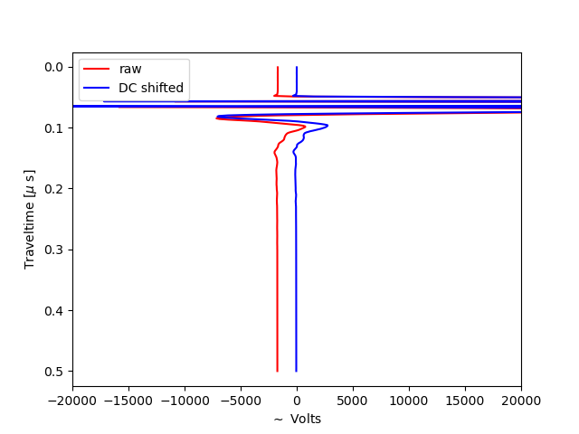
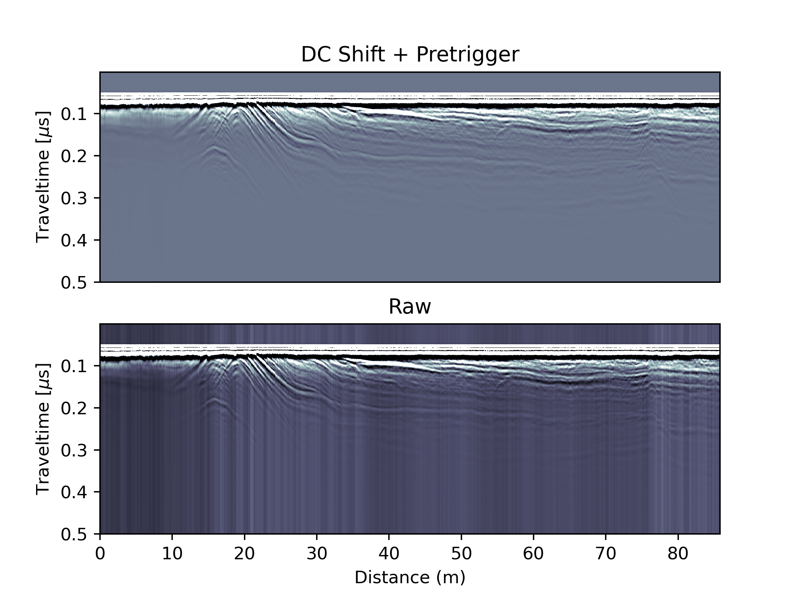
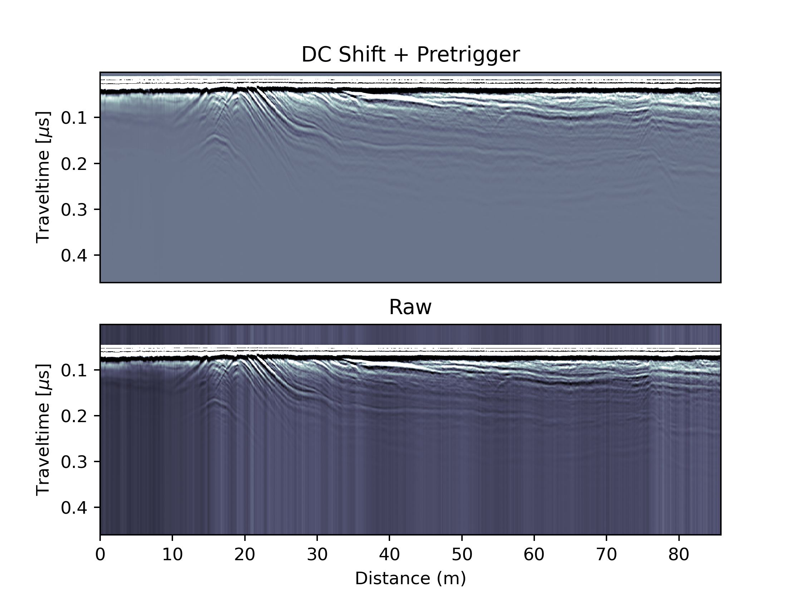

GPR Processing
Already in the raw data we can diagnose some subsurface features which change depth along the profile. Further processing is geared to increase the signal-to-noise ratio optimizing structures at larger depths.
DC Shift
Ideally individual traces should be centered 0 with positive and negative excursions signifiying the reflected wavelets. However, due to coupling effects between the antennas and the surface the receiver can become saturated with the direct wave and the ground-wave signal. This then results in a systematic DC offset which may change along the profile direction. Checking and correcting for such an offset is best done on indvidual traces:
{kind=link}
We correct for this offset by subtracting the mean of the pretrigger:
for ii in TraceNumbers:
ProcArray[:,ii] = ProcArray[:,ii] - np.mean(ProcArray[0:Pretrigger-5,ii])
In the full radargramm the DC offset is visible as individual vertical bands where the backscattered amplitudes systematically changes in the profile direction. The DC correction removes the vertical banding.
{kind=link}
Removal of Pretrigger
After the DC correciton, the pretrigger is not useful anymore and will cause problems in the traveltime-to-depth conversion later on. Let’s remove it, which will change the dimnsions of all vertical variables. .. code-block:: python
ProcArrayCrop = np.delete(ProcArray, range(Pretrigger), 0) ProcArray = ProcArrayCrop SampleNumbers=SampleNumbers[:-Pretrigger] Depth=Depth[:-Pretrigger]; Traveltime=Traveltime[:-Pretrigger]
{kind=link}
High-Pass filtering
Another problem that frequently occurs in GPR data are low-frequency oscillations which shift individual radar traces away from the 0 Volts line. Such oscillations cannot be removed with a simple offset as done in the DC correction, but require a simple high-pass filter also known as dewow. Here we implement this filter in a simple form by ‘smoothing’ individual traces with a running mean filter. We choose the weights of this filter to be distributed in form of a Gaussian bell curve. The width of this curve will define how much smoothing we apply (the more smoothing, the more the high-frequency oscillations will be damped). This is essentially a low-pass filter and we obtain the high-pass filter by subtracting the low-pass filtered signal from the observations. The theory of filtering is huge, and much literature around these finite impulse response filters (FIR) exists. This step can also easily be turned into a bandpass filter by investigating the spectral properties of the window function. At some stage this might be done here. Not today.
kernel_size = 20;sigma=4;
x = np.arange(-kernel_size/2,kernel_size/2+1)
kernel = 1/(sigma*np.sqrt(2*np.pi))*np.exp(-0.5*x**2/sigma**2)
for ii in TraceNumbers:
## This gives us the low-frequency (or smoothed) component
wow = np.convolve(ProcArray[:,ii], kernel, mode='same')
## Subtraction of the low-frequency signal, leaves us with the higher frequencies
ProcArray[:,ii] = ProcArray[:,ii] - wow.transpose()
{kind=link}
This filter has now removed this white band that appeared directly beneath the direct wave. Nice. We don’t see any horiztonal banding and hence don’t use other filters such as background removal.
Gaining
Now its time to check if we can amplify signals from larger depths by applying a depth-dependent gain which corrects fo the increasing radio wave attenuation. An easy version is to multiply individual radar traces with a linear or non-linear function that increases with depth:
SlopeGain = 1.5
NonLinearity = 1.5
for ii in TraceNumbers:
#linear
Gain = SlopeGain*SampleNumbers**NonLinearity
ProcArray[:,ii] = ProcArray[:,ii]*Gain
{kind=link}
A more agressive method would be to apply an automatic gain control in which we normalize the backscattered energy in a given window for all depths:
window=10
scaling_factor = 2
maxamp = np.zeros((SampleNumbers[-1]+1,))
for k in TraceNumbers:
for i in SampleNumbers:
maxamp[i] = np.max(np.abs(ProcArray[max(0, i - window // 2):min(i + window // 2, SampleNumbers[-1]), k]))
ProcArray[:,k] = ProcArray[:,k]*scaling_factor / maxamp.transpose()
{kind=link}
Topographic Correction
Last but not least we need to include the topography. Either this comes from a GPS or from a surface elevation model. In either case, we need to do the traveltime to depth conversion and shift traces relative to each other:
## Topographic correction
## Define Reference Height (i.e. SurfaceElevation which corresponds to bin 0)
RefHeight = np.max(SurfaceElevation)
#RefHeight = 1817.0
## Define new Array. We will have a new y-axis.
indshift = np.round((RefHeight - SurfaceElevation)/dz)[0].astype(np.int);
maxshift = int(np.max(indshift));
TopoArray = np.zeros((SampleNumbers[-1]+maxshift,TraceNumbers[-1]+1));
## Shift traces vertically according to their elevation
for k in TraceNumbers:
TopoArray[indshift[k]:SampleNumbers[-1]+indshift[k]-1,k] = ProcArray[0:SampleNumbers[-1]-1,k];
{kind=link}